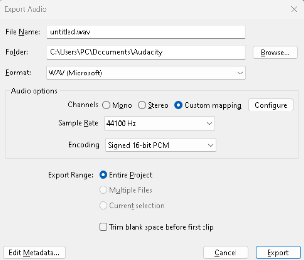

Sons et musiques
Le format doit être en en .wav ou .mp3 en 16 bits quantification avec 44.1 KHz en fréquence d'échantillonage.

Lire un fichier son dans hammer
Ajouter votre fichier audio dans la liste des fichiers audio.
Crée un fichier scripts/mymod_sounds.txt.
"nameofmysound"
{
"channel" "CHAN_AUTO"
"volume" "VOL_NORM"
"pitch" "95, 105"
"soundlevel" "SNDLVL_GUNFIRE"
"wave" "sounds/fileofmysound.wav"
}
https://developer.valvesoftware.com/wiki/Soundscripts
Puis ajouter votre fichiers dans scripts/game_sounds_manifest.txt.
Sur Hammer vous devez mettre un ambient_generic.

Vous avez l'option play_everywhere dans les Flags.
Changer le son de l'interface
Dans le fichier hl2_client.cpp, on a tout les fichiers chargé par défault dans la mémoire.
//-----------------------------------------------------------------------------
// Purpose: Precache game-specific models & sounds
//-----------------------------------------------------------------------------
void ClientGamePrecache( void )
{
CBaseEntity::PrecacheModel("models/player.mdl");
CBaseEntity::PrecacheModel( "models/gibs/agibs.mdl" );
CBaseEntity::PrecacheModel ("models/weapons/v_hands.mdl");
CBaseEntity::PrecacheScriptSound( "HUDQuickInfo.LowAmmo" );
CBaseEntity::PrecacheScriptSound( "HUDQuickInfo.LowHealth" );
CBaseEntity::PrecacheScriptSound( "FX_AntlionImpact.ShellImpact" );
CBaseEntity::PrecacheScriptSound( "Missile.ShotDown" );
CBaseEntity::PrecacheScriptSound( "Bullets.DefaultNearmiss" );
CBaseEntity::PrecacheScriptSound( "Bullets.GunshipNearmiss" );
CBaseEntity::PrecacheScriptSound( "Bullets.StriderNearmiss" );
CBaseEntity::PrecacheScriptSound( "Geiger.BeepHigh" );
CBaseEntity::PrecacheScriptSound( "Geiger.BeepLow" );
}
Dans scripts/game_sounds_ui.txt, nous avons les deux scripts avec le son qui est joué.
"HUDQuickInfo.LowHealth"
{
"channel" "CHAN_ITEM"
"volume" "0.8"
"pitch" "PITCH_NORM"
"soundlevel" "SNDLVL_NONE"
"wave" "common/warning.wav"
}
"HUDQuickInfo.LowAmmo"
{
"channel" "CHAN_ITEM"
"volume" "0.8"
"pitch" "PITCH_NORM"
"soundlevel" "SNDLVL_NONE"
"wave" "common/warning.wav"
}
Voici l'algorithme qui joue le son, dans le fichier hud_quickinfo.cpp la fonction void CHUDQuickInfo::Paint()
if ( health != m_lastHealth )
{
UpdateEventTime();
m_lastHealth = health;
if ( health <= HEALTH_WARNING_THRESHOLD )
{
if ( m_warnHealth == false )
{
m_healthFade = 255;
m_warnHealth = true;
CLocalPlayerFilter filter;
C_BaseEntity::EmitSound( filter, SOUND_FROM_LOCAL_PLAYER, "HUDQuickInfo.LowHealth" );
}
}
else
{
m_warnHealth = false;
}
}